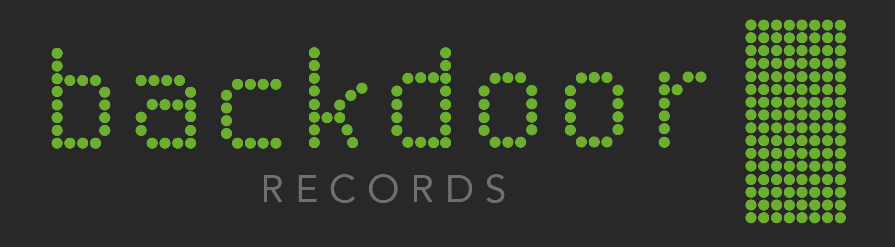

In cybersecurity, a backdoor is a method of bypassing normal security blocks. It allows for an individual
to access a particular program or system without having to hack certain safety measures put in place to avoid access. While they are often intentionally put in place to allow for easier access for system or program administrators, backdoors are often exploited by those with malicious intent so as to gain easy access to a certain computer system.
The first artist to sign with Backdoor Records, Minuit, extends this post-modern theme with
their strikingly experimental and futuristic sound. While it is made clear that Backdoor does not focus on any specific genre, the sound
of Minuit, especially because it is Backdoor's first signed artist, comes
to represent the general flair of the record label. Although this may not be intentional, Minuit becomes an ambassador for the Backdoor Records brand expressing the style of music to come out of the label.
The visual identity concept design is born out of the computer security meaning behind the word "backdoor" and the experimental, post-modern style of Backdoor Records' first artist, Minuit. The design is inspired by the Homebrew theme on the Mac OSX Terminal program. This theme is the quintessential ideal for hacking as
it was designed to be as easy as possible on the eyes when stared at for long periods of time. The logo
is intended to align with a brand centered around the unifying theme of 'geek chic'.